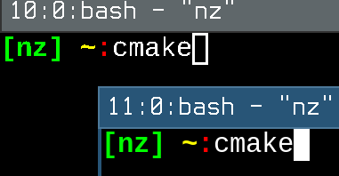

fontconfig on 160 DPI
Tl;DR
If you got garbled fonts after a recent update of nixos-unstable
consider dropping HiDPI flag in your configuration. It is usually one
of these:
hardware.video.hidpi.enable = true;
fonts.optimizeForVeryHighDPI = true;
If you recently followed a rename from hardware.video.hidpi.enable to
fonts.optimizeForVeryHighDPI and your monitor is below 200 DPI you are
probably still affected.
If your device has a subpixel format more complicated that vertical or
horizontal RGB you might want to disable subpixel rendering entirely:
fonts.fontconfig.subpixel.rgba = "none";
fonts.fontconfig.subpixel.lcdfilter = "none";
If your fonts don't contain reasonable hints for rasterization try
freetype autohint:
fonts.fontconfig.hinting.autohint = true;
The problem
A few days ago the change landed to nixpkgs to disable fonts
anti-aliasing
via nixpkgs template for fontconfig configuration.
The change claimed that on 200+ DPI monitors anti-aliasing is not
detectable.
Unfortunately my monitor was a bit below 200 DPI and I noticed degraded
font quality after an upgrade.
My monitor has ~160 physical DPI which I configure as 192 DPI for
simplicity (exactly 2x scale of default 96 DPI). Typical wayland
clients like firefox and alacritty are smart enough to perform
actual rendering into unscaled (device pixel-perfect) surface using
2x of original font point size. The result is nice looking fonts.
Bogus HiDPI setting
So why am I even getting HiDPI setting then if I'm just below 200 DPI?
It used to work before. What changed?
The hardware.video.hidpi.enable flag in my
/etc/nixos/hardware-configuration.nix NixOS configuration came from
NixOS installer when I first installed the system:
# /etc/nixos/hardware-configuration.nix
# ...
# Do not modify this file! It was generated by ‘nixos-generate-config’
# and may be overwritten by future invocations. Please make changes
# to /etc/nixos/configuration.nix instead.
{ config, lib, pkgs, modulesPath, ... }:
{
# ...
# high-resolution display
hardware.video.hidpi.enable = lib.mkDefault true;
}
It's a small auto-generated file. The above snippet comes from this
bit of perl of the installer:
# From nixos/modules/installer/tools/nixos-generate-config.pl
# ...
# For lack of a better way to determine it, guess whether we should use a
# bigger font for the console from the display mode on the first
# framebuffer. A way based on the physical size/actual DPI reported by
# the monitor would be nice, but I don't know how to do this without X :)
my $fb_modes_file = "/sys/class/graphics/fb0/modes";
if (-f $fb_modes_file && -r $fb_modes_file) {
my $modes = read_file($fb_modes_file);
$modes =~ m/([0-9]+)x([0-9]+)/;
my $console_width = $1, my $console_height = $2;
if ($console_width > 1920) {
push @attrs, "# high-resolution display";
push @attrs, 'hardware.video.hidpi.enable = lib.mkDefault true;';
}
}
My system has the following value:
$ cat /sys/class/graphics/fb0/modes
U:3840x2160p-0
Thus, perl snippet above triggers a HiDPI setting based on pixel
width. Unfortunately my physical screen width is 620mm (~24 inches).
This makes it a 160 DPI screen.
According to the code comment HiDPI was enabled mainly for font size
in the kernel console and does not say much about Xorg or wayland
clients.
Am I supposed to regenerate that file periodically?
man nixos-generate-config says that hardware-configuration.nix file
does not normally gets regenerated and one has to run the script after
any hardware changes are made. I don't remember ever doing that.
After numerous reports around broken fonts nixos-generate-config was
fixed with
https://github.com/NixOS/nixpkgs/pull/222236
to stop inferring (incorrectly) that option for users.
Thus new users' installs should not get HiDPI for hardware like mine.
Yay!
Confusing option rename
The initial change also got the other problem: it did not suggest users to
remove the option from hardware-configuration.nix. It suggested to
transition it to another option: fonts.optimizeForVeryHighDPI.
It feels natural for people to mechanically switch from hidpi.enable
to fonts.optimizeForVeryHighDPI assuming they have the same semantic.
Both are about HiDPI, right? At least that is what I did initially :)
No. hidpi.enable used to mean > 1920 width. VeryHighDPI means
physical 200+ DPI. If you are lucky to get into an intersection of both
(or neither) then you will not notice the change.
Actual effect
Given that fontconfig usually reads its configuration at program
startup I was able run the same alacritty application side by side
before and after the fontconfig change.

Both lines feel almost the same. Can you spot the difference? The
difference is even more visible when we zoom in a bit.
As original PR #194594
did not contain too many details I was not sure if my system was
incorrectly configured or the change had a bug and unintentionally degraded my
fonts.
My first workaround was to flip all the fontconfig options back on:
{ ... }:
{
# Fix aliasing until it's fixed in:
# https://github.com/NixOS/nixpkgs/pull/194594
fonts.fontconfig.antialias = true;
fonts.fontconfig.hinting.enable = true;
fonts.fontconfig.subpixel.lcdfilter = "default";
fonts.fontconfig.subpixel.rgba = "rgb";
}
That allowed me to restore previous behavior and continue the experiments.
I disabled output scaling (wlr-randr --output ... --scale 1) and
manually set 2x font sizes in a few wayland applications. Nothing
changed compared to --scale 2 (good!). Applications generated
identical font output. Bringing font anti-aliasing back restored font
look and feel.
I never really knew what these knobs do. I took it as an opportunity to explore it in a bit more detail the get the idea if I still need them and if I can do any adjustments to them.
I used to use similar knobs in gentoo as well on 96 DPI monitor and
was a happy user. The only caveat is that I was a user of Terminus
font in the terminals. And that is a pixel-perfect bitmap font: it always
disables anti-aliasing and subpixel rendering. For other applications
I used default fonts and occasionally Comic Sans. There fontconfig
changes did show the difference.
Nowadays I use Liberation Mono font (11.5pt) in alacritty. And it
looked reasonable until the regression.
freetype algorithms
So what do these options do? I found a nice visual explanation for some of them here:
antialiasuses various brightness of white to simulate smoother curves on pixel grid. Probably the most important option to get the smooth curves. And the source of "blurred" effect when done wrong.subpixelrendering exploits the fact that each LCD monitors' pixel consists ofsubpixels(pixels within pixel!) of a particular color (Red,Green,Blue) which you can manipulate separately.
On top of that freetype implements a few more algorithms:
LCDfiltering to restore "white" color aftersubpixelrendering.- font rasterization
hintingto coerce fonts to fit better into pixel grid by sacrificing rasterization correctness in favor of less blur.
Anti-aliasing
mrandri19.github.io
contains the effect of both grayscale anti-aliasing and subpixel
anti-aliasing.
Anti-aliasing sounds straightforward: use varying brightness to simulate smooth boundaries. As long as you can still distinguish individual pixels on the monitor you will clearly see the effect. And even if you don't chances are that text without anti-aliasing will look less even (jumping letter height).
subpixel rendering
subpixel rendering is less intuitive: it relies on the fact that each
pixel in many LCD monitors contains many distinct Red, Green and
Blue sections in different parts of the pixel (subpixels). There are
various subpixel patterns used for different devices.
The simplest of is vertical RGB. This topology is conveyed to
freetype via fonts.fontconfig.subpixel.rgba = "rgb"; NixOS option.

In this case use of subpixel rendering increases rendering resolution 3
times! But only in horizontal dimension (and with coloring caveats).
Each subpixel intensity is set by pixel's RGB values from 0 to 256.
For example, you can light only 66% of the subpixel by #00FFFF color. It
is magic.
What I did not realize is that rotating your monitor 90 degrees you will
probably slightly "break" your rendering as fontconfig will assume the
same vertical bars. But the rotation makes it horizontal! Ideally
configuration would have to change to fonts.fontconfig.subpixel.rgba = "vrgb";.
And having two monitors setup attached to a single machine with different rotations makes it even more interesting.
This also means that lossless .png screenshots made on a system with
one subpixel order will be rendered differently on a system with
another subpixel order. This means that sharing screenshots might not
be very convincing to explain the rendering degradation. But the
zoom into the picture should make things less dependent on subpixels.
The good news is that subpixel rendering might not be as noticeable for
120+ DPI devices. At least I did not manage to detect my subpixel
layout using http://www.lagom.nl/lcd-test/subpixel.php on any of the
monitors I had (lowest was 100 DPI).
Vertical RGB subpixel layout is not the only available format.
https://geometrian.com/programming/reference/subpixelzoo/index.php
lists 26 formats. Some of them are rotations. But some of them use
subpixels that overlap with multiple pixels. That makes rendering even
more interesting problem. For example on some OLED displays subpixels
are a lot more complicated: https://en.wikipedia.org/wiki/PenTile_matrix_family.
freetype's subpixel render as a library seems to be able to handle
some formats by specifying
subpixel geometry.
I'm not sure fontconfig allows you to specify it via /etc/fonts.
Issue #63
suggests there is no support for it yet. The good news is that DPI of
those devices is usually very high and subpixel details are harder to
notice.
This means that if your display device has something more complicated
that a form of vertical or horizontal RGB you might want to disable
subpixel rendering entirely as will not do any good.
LCD filtering
In addition to that freetype also implement LCD filtering to restore
"white" color after exploiting subpixels when rendering "white" font.
LCD filter once again uses knowledge of subpixel shape to restore color
balance: https://freetype.org/freetype2/docs/reference/ft2-lcd_rendering.html.
Font hinting
And the last but not least is the https://en.wikipedia.org/wiki/Font_hinting
which embeds hints on how to better adjust fonts to pixel grid when
rasterized. Very old TTF fonts have hints only for 640x480 monitors and
thus look awful when those hints are followed. FreeType implements a
few hinting algorithms. One of them ignores font hints entirely and
constructs some reasonable form itself:
https://freetype.org/autohinting/hinter.html. On NixOS it can be
enabled with fonts.fontconfig.hinting.autohint = true;.
Parting words
Fonts are hard, exciting, and fun!
If you got garbled fonts on NixOS recently then try to disable
hardware.video.hidpi.enable and fonts.optimizeForVeryHighDPI
settings if you device is under 200 physical DPI. Otherwise, you might
want to explore your type of LCD screen and tweak subpixel rendering:
either disable it entirely or tweak it to match hardware.
Text screenshots might look differently on screens of the same size if
subpixel layout differs among them (if screen is rotated or pixel
technology leads to a different layout).
Having spent some time tweaking fonts for this post I decided to give
Roboto Mono another chance. Let's see if it will be on par with
Liberation Mono.
While at it, I enabled fonts.fontconfig.hinting.autohint = true;
to see if autohint makes
font rendering better on fonts without explicit hints for popular pixel
sizes.
Have fun!